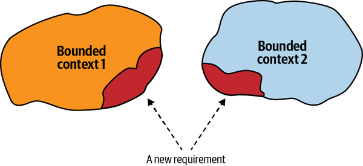
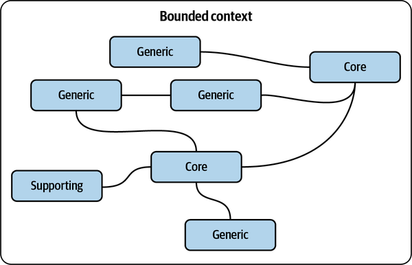
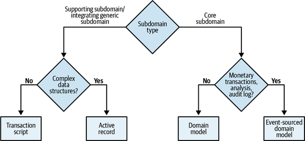
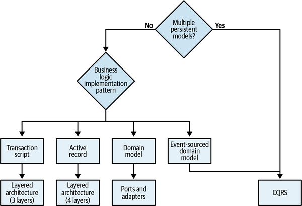
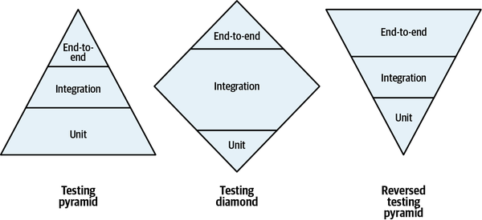
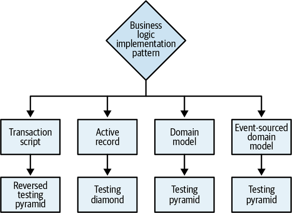
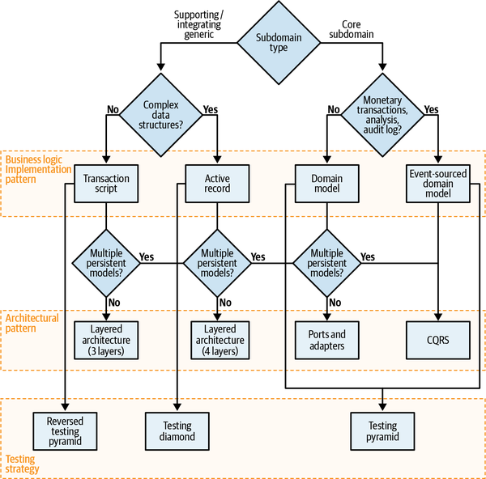

“It depends” is the correct answer to almost any question in software engineering, but not really practical. In this chapter, we will explore what “it” depends on.
In Part I of the book, you learned domain-driven design tools for analyzing business domains and making strategic design decisions. In Part II, we explored tactical design patterns: the different ways to implement business logic, organize system architecture, and establish communication between a system’s components. This chapter bridges Parts I and II. You will learn heuristics for applying analysis tools to drive various software design decisions: that is, (business) domain-driven (software) design.
But first, since this chapter is about design heuristics, let’s start by defining the term heuristic.
A heuristic is not a hard rule that is guaranteed and mathematically proven to be correct in 100% of cases. Rather, it’s a rule of thumb: not guaranteed to be perfect, yet sufficient for one’s immediate goals. In other words, using heuristics is an effective problem-solving approach that ignores the noise inherent in many cues, focusing instead on the “swamping forces” reflected in the most important cues.1
The heuristics presented in this chapter focus on the essential properties of the different business domains and on the essence of the problems addressed by the various design decisions.
As you’ll recall from Chapter 3, both wide and narrow boundaries could fit the definition of a valid bounded context encompassing a consistent ubiquitous language. But still, what is the optimal size of a bounded context? This question is especially important in light of the frequent equation of bounded contexts with microservices.2
Should we always strive for the smallest possible bounded contexts? As my friend Nick Tune says:
There are many useful and revealing heuristics for defining the boundaries of a service. Size is one of the least useful.
Rather than making the model a function of the desired size—optimizing for small bounded contexts—it’s much more effective to do the opposite: treat the bounded context’s size as a function of the model it encompasses.
Software changes affecting multiple bounded contexts are expensive and require lots of coordination, especially if the affected bounded contexts are implemented by different teams. Such changes that are not encapsulated in a single bounded context signal ineffective design of the contexts’ boundaries. Unfortunately, refactoring bounded context boundaries is an expensive undertaking, and in many cases, the ineffective boundaries remain unattended and end up accumulating technical debt (see Figure 10-1).

Changes that invalidate the bounded contexts’ boundaries typically occur when the business domain is not well known or the business requirements change frequently. As you learned in Chapter 1, both volatility and uncertainty are the properties of core subdomains, especially at the early stages of implementation. We can use it as a heuristic for designing bounded context boundaries.
Broad bounded context boundaries, or those that encompass multiple subdomains, make it safer to be wrong about the boundaries or the models of the included subdomains. Refactoring logical boundaries is considerably less expensive than refactoring physical boundaries. Hence, when designing bounded contexts, start with wider boundaries. If required, decompose the wide boundaries into smaller ones as you gain domain knowledge.
This heuristic applies mainly to bounded contexts encompassing core subdomains, as both generic and supporting subdomains are more formularized and much less volatile. When creating a bounded context that contains a core subdomain, you can protect yourself against unforeseen changes by including other subdomains that the core subdomain interacts with most often. This can be other core subdomains, or even supporting and generic subdomains, as shown in Figure 10-2.

In Chapters 5–7, where we discussed business logic in detail, you learned four different ways to model business logic: the transaction script, active record, domain model, and event-sourced domain model patterns.
Both the transaction script and active record patterns are better suited for subdomains with simple business logic: supporting subdomains or integrating a third-party solution for a generic subdomain, for example. The difference between the two patterns is the complexity of the data structures. The transaction script pattern can be used for simple data structures, while the active record pattern helps to encapsulate the mapping of complex data structures to the underlying database.
The domain model and its variant, the event-sourced domain model, lend themselves to subdomains that have complex business logic: core subdomains. Core subdomains that deal with monetary transactions, are obligated by law to provide an audit log, or require deep analytics of the system’s behavior are better addressed by the event-sourced domain model.
With all of this in mind, an effective heuristic for choosing the appropriate business logic implementation pattern is to ask the following questions:
Does the subdomain track money or other monetary transactions or have to provide a consistent audit log, or is deep analysis of its behavior required by the business? If so, use the event-sourced domain model. Otherwise...
Is the subdomain’s business logic complex? If so, implement a domain model. Otherwise...
Does the subdomain include complex data structures? If so, use the active record pattern. Otherwise...
Implement a transaction script.
Since there is a strong relationship between a subdomain’s complexity and its type, we can visualize the heuristics using a domain-driven decision tree, as shown in Figure 10-3.

We can use another heuristic to define the difference between complex and simple business logic. The line between these two types of business logic is not terribly sharp, but it’s useful. In general, complex business logic includes complicated business rules, invariants, and algorithms. A simple approach mainly revolves around validating the inputs. Another heuristic for evaluating complexity concerns the complexity of the ubiquitous language itself. Is it mainly describing CRUD operations, or is it describing more complicated business processes and rules?
Deciding on the business logic implementation pattern according to the complexity of the business logic and its data structures is a way to validate your assumptions about the subdomain type. Suppose you consider it to be a core subdomain, but the best pattern is active record or transaction script. Or suppose what you believe is a supporting subdomain requires a domain model or an event-sourced domain model; in this case, it’s an excellent opportunity to revisit your assumptions about the subdomain and business domain in general. Remember, a core subdomain’s competitive advantage is not necessarily technical.
In Chapter 8, you learned about the three architectural patterns: layered architecture, ports & adapters, and CQRS.
Knowing the intended business logic implementation pattern makes choosing an architectural pattern straightforward:
The event-sourced domain model requires CQRS. Otherwise, the system will be extremely limited in its data querying options, fetching a single instance by its ID only.
The domain model requires the ports & adapters architecture. Otherwise, the layered architecture makes it hard to make aggregates and value objects ignorant of persistence.
The Active record pattern is best accompanied by a layered architecture with the additional application (service) layer. This is for the logic controlling the active records.
The transaction script pattern can be implemented with a minimal layered architecture, consisting of only three layers.
The only exception to the preceding heuristics is the CQRS pattern. CQRS can be beneficial not only for the event-sourced domain model, but also for any other pattern if the subdomain requires representing its data in multiple persistent models.
Figure 10-4 shows a decision tree for choosing an architectural pattern based on these heuristics.

The knowledge of both the business logic implementation pattern and the architectural pattern can be used as a heuristic for choosing a testing strategy for the codebase. Take a look at the three testing strategies shown in Figure 10-5.

The difference between the testing strategies in the figure is their emphasis on the different types of tests: unit, integration, and end-to-end. Let’s analyze each strategy and the context in which each pattern should be used.
The classic testing pyramid emphasizes unit tests, fewer integration tests, and even fewer end-to-end tests. Both variants of the domain model patterns are best addressed with the testing pyramid. Aggregates and value objects make perfect units for effectively testing the business logic.
The testing diamond focuses the most on integration tests. When the active record pattern is used, the system’s business logic is, by definition, spread across both the service and business logic layers. Therefore, to focus on integrating the two layers, the testing diamond is the more effective choice.
The reversed testing pyramid attributes the most attention to end-to-end tests: verifying the application’s workflow from beginning to end. Such an approach best fits codebases implementing the transaction script pattern: the business logic is simple and the number of layers is minimal, making it more effective to verify the end-to-end flow of the system.
Figure 10-6 shows the testing strategy decision tree.

The business logic patterns, architectural patterns, and testing strategy heuristics can be unified and summarized with a tactical design decision tree, as depicted in Figure 10-7.

As you can see, identifying subdomains types and following the decision tree gives you a solid starting point for making the essential design decisions. That said, it’s important to reiterate that these are heuristics, not hard rules. There is an exception to every rule, let alone heuristics, that by definition are not intended to be correct in 100% of the cases.
The decision tree is based on my preference to use the simple tools, and resort to the advanced patterns—domain model, event-sourced domain model, CQRS, and so on—only when absolutely necessary. On the other hand, I’ve met teams that have a lot of experience implementing the event-sourced domain model and therefore use it for all their subdomains. For them it’s simpler than using different patterns. Can I recommend this approach to everyone? Of course not. In the companies I have worked for or consulted, the heuristics-based approach was more efficient than using the same solution for every problem.
At the end of the day, it depends on your specific context. Use the decision tree illustrated in Figure 10-7, and the design heuristics it is based on, as guiding principles, but not as a replacement for critical thinking. If you find that alternative heuristics fit you better, feel free to alter the guiding principles or build your own decision tree altogether.
This chapter connected Parts I and II of the book to a heuristic-based decision framework. You learned how to apply the knowledge of the business domain and its subdomains to drive technical decisions: choosing safe bounded context boundaries, modeling the application’s business logic, and determining the architectural pattern needed to orchestrate the interactions of each bounded context’s internal components. Finally, we took a detour into a different topic that is often a subject of passionate arguments—what kind of test is more important—and used the same framework to prioritize the different tests according to the business domain.
Making design decisions is important, but even more so is to verify the decisions’ validity over time. In the next chapter, we will shift our discussion to the next phase of the software design lifecycle: the evolution of design decisions.
Assume you are implementing WolfDesk’s (see Preface) ticket lifecycle management system. It’s a core subdomain that requires deep analysis of its behavior so that the algorithm can be further optimized over time. What would your initial strategy be for implementing the business logic and the component’s architecture? What would your testing strategy be?
Domain model, CQRS architecture, and testing strategy that focuses on unit tests.
Active records, layered architecture, and testing strategy that focuses on integration tests.
Domain model, ports and adapters, and testing strategy that focuses on unit tests.
Event-sourced domain model, CQRS architecture, and testing strategy that focuses on unit tests.
What would your design decisions be for WolfDesk’s support agents’ shift management module (supporting subdomain)?
Active record, layered architecture, integration tests.
Domain model, ports and adapters, unit tests.
Domain model, CQRS, unit tests.
Event sourced-domain model, CQRS, unit tests.
To ease the process of managing agents’ shifts, you want to use an external provider of public holidays for different geographical regions. The process works by periodically calling the external provider and fetching the dates and names of forthcoming public holidays. What business logic and architectural patterns would you use to implement the integration? How would you test it?
Domain model, ports and adapters, integration tests.
Domain model, CQRS, unit tests.
Event-sourced domain model, CQRS, unit tests.
Transaction script, layered architecture, end-to-end tests.
Based on your experience, what other aspects of the software development process can be included in the heuristics-based decision tree presented in this chapter?
1 Gigerenzer, G., Todd, P. M., & ABC Research Group (Research Group, Max Planck Institute, Germany). (1999). Simple Heuristics That Make Us Smart. New York: Oxford University Press.
2 Chapter 11 is dedicated to the interplay between bounded contexts and microservices.